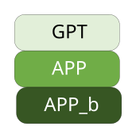
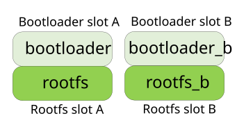
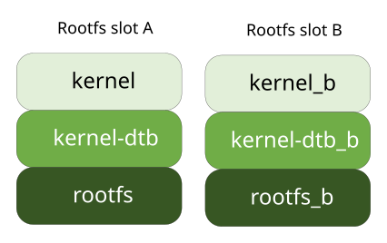

Root File System#
NVIDIA Jetson Linux Driver Package (L4T) comes with a pre-built sample root file system created for the NVIDIA Jetson developer kits. This chapter describes:
Manually Generate a Root File System#
NVIDIA provides a tool to generate a root file system. To use the tool, navigate to the tools/samplefs directory in the extracted NVIDIA driver package:
$ cd <your_L4T_root>/Linux_for_Tegra/tools/samplefs
Note
The tool downloads the base image, extracts the root file system, downloads and installs all required packages, and compresses the root file system directory to a tarball. Depending on the Internet speed of your host machine, it might take several hours to run.
Desktop Flavor Root File System#
The desktop root file system is the same as the NVIDIA prebuilt sample root file system, which includes the Ubuntu Desktop comes installed with a slightly modified version of the GNOME Desktop Environment, and an OEM configuration.
Execute the nv_build_samplefs.sh script with the parameters to generate the desktop root file system:
$ sudo ./nv_build_samplefs.sh --abi aarch64 --distro ubuntu --flavor desktop --version jammy
Note
NVIDIA only supports NVIDIA drivers and software for use with the GNOME Desktop Environment.
Minimal Flavor Root File System#
The minimal root file system is a smaller root file system that is used for NVIDIA Jetson develop kits. This file system does not provide the GUI mode, and all manipulations can be completed only by using the SSH or UART console. The file system does not also provide an OEM configuration, so we recommend that you create a default user before you flash the device. Refer to l4t_create_default_user.sh in Skipping oem-config for more information.
Execute the nv_build_samplefs.sh script with the parameters to generate the minimal root file system:
$ sudo ./nv_build_samplefs.sh --abi aarch64 --distro ubuntu --flavor minimal --version jammy
Basic Flavor Root File System#
The basic root file system is the smallest root file system that is used for NVIDIA Jetson develop kits and contains the dependencies for BSP and NVIDIA Docker. End users can install NVIDIA Docker to run the NVIDIA container and launch CUDA applications. Similar to the minimal root file system, manipulations can be completed only by using the SSH or UART console.
Note: You must create a default user before you flash the device.
To generate the basic root file system, run the nv_build_samplefs.sh script with the following parameters:
$ sudo ./nv_build_samplefs.sh --abi aarch64 --distro ubuntu --flavor basic --version jammy
Execute the Script on a Non-Ubuntu 22.04 Host#
The script can only be executed on an Ubuntu 22.04 host. If your host is not running Ubuntu 22.04, NVIDIA allows you to use a Docker container to run the script:
$ sudo apt-get install docker.io
$ sudo docker run --privileged -it --rm -v <your_L4T_root>/Linux_for_Tegra:/l4t ubuntu:22.04
(in the container) $ apt-get update
(in the container) $ apt-get install -y qemu-user-static wget sudo bzip2
(in the container) $ cd /l4t/tools/samplefs
Execute the script to generate the desktop/minimal root file system in the container.
Using the Script#
For more information about the parameters, enter the script name without sudo. The command is used exactly as shown, but you need not understand the parameters to use it.
Root File System Redundancy#
NVIDIA® Jetson™ Linux provides support for root file system redundancy (“rootfs redundancy”) on NVIDIA® Jetson Orin series. It uses two root file systems,
one designated rootfs A and stored in the usual file system partition, APP, and the other designated rootfs B and stored in a new partition, APP_b, located after APP on the disk.

Rootfs redundancy supports independent creation and updates of the two file systems, switching, and fail-over.
Note
Rootfs redundancy is an advanced feature and is intended for customers who have the capability to create customized rootfs images.
The partition names APP and APP_b cannot be changed.
Rootfs Selection#
When rootfs A/B is enabled, Jetson Linux always links the rootfs A/B with Bootloader A/B.
The Bootloader slot and rootfs slot are configured together. This way, Bootloader A always boots with rootfs A, and Bootloader B always boots with rootfs B.

Each rootfs has several attributes:
Each rootfs occupies a slot in the redundant file system architecture: “slot A” or “slot B”.

The kernel and kernel-dtb partitions belong to the userspace. When rootfs redundancy is in use, they belong to the rootfs slots and are selected
by their rootfs slots.
The active rootfs slot is the slot from which the next boot operation will attempt to boot. The active rootfs slot, which is the rootfs slot that
Linux uses, is same as the Bootloader active slot, which is the Bootloader slot where Linux was booted.
The current rootfs slot is the one that the system booted from and is currently using. The other rootfs slot is called the unused rootfs slot. The
system might exchange the roles of the current and unused rootfs slots during an update or when the current rootfs repeatedly fails while booting
or immediately after. The current rootfs slot is switched with the Bootloader current slot.
A rootfs slot’s Status attribute indicates whether the rootfs contains a valid system image that can be used to boot the device. When the system is
running, the Status attribute of current rootfs slot is necessarily bootable. The unused rootfs slot might have an older, identical, or newer version of the
system and might be bootable. The Status attribute is managed by cpu-bootloader and nvbootctrl, which verify the rootfs boot.
If the current rootfs fails to boot a specified number of times, cpu-bootloader marks its Status attribute and switches the roles of the current and unused
rootfs slots. If both root file systems are unbootable, the device tries to boot from the recovery kernel image.
By default, the cpu-bootloader tries to boot the rootfs three times. The number of tries is configurable. Refer to
Flashing the Target Board with a Redundant Root File Systems for more information.
The rootfs retry count is stored in the scratch register. During a cold boot, cpu-bootloader initializes the scratch register. Once the system successfully
boots into the file system, a background service clears the scratch register.
Here is the layout of the scratch register:
Bits |
Contents |
|---|---|
31–22 |
Reserved |
21–20 |
Rootfs retry count of slot A |
19–18 |
Rootfs retry count of slot B |
17–16 |
Current rootfs slot |
15–0 |
Magic pattern |
If the system boots to rootfs successfully, two background services validate the rootfs boot status:
l4t-rootfs-validation-config.serviceruns the customer-specific rootfs validation function to check whether the rootfs boots successfully. By default, the customer-specific function does not exist, so the service has no effect.nv-l4tbootloader-config.servicecallsnvbootctrl verifyto validate the rootfs boot status. It starts after thel4t-rootfs-validation-config.serviceservice has finished during boot time.
By default, if the system failed to boot to rootfs, the nv-l4t-bootloader-config.service background service does not have a chance to validate the rootfs
boot status. When the failure happens continuously for three times:
If the rootfs A/B is enabled, the system switches to the unused rootfs slot.
If the rootfs A/B is disabled, the system switches and boots the recovery kernel.
Note
Ensure that the background service successfully completed before issuing a
rebootcommand in kernel command line. To check the status of the background service, runsudo systemctl status nv-l4t-bootloader-config. Thestatusfield in the output should be0/SUCCESS.If the system boots to the recovery kernel, to exit the recovery kernel boot, refer to Set the System to Normal Boot from the Recovery Kernel Boot for more information.
Creating Redundant Root File Systems#
To create and flash the target board with rootfs redundancy, Jetson-Linux provides a flash command. You can complete some customizations before the flashing.
Before you create the file systems, compare the layout file for your Jetson device with the corresponding layout file for a non-redundant system. Understanding the differences between the files helps you understand how file system redundancy works.
A layout file is an XML file that describes the partition layout for a Jetson-Linux system. The files describe the partition layout for each Jetson platform, and here is a list of the layout files for redundant file systems on various platforms:
For Jetson Orin NX and Nano series:
Linux_for_tegra/tools/kernel_flash/flash_l4t_nvme_rootfs_ab.xml
For Jetson AGX Orin series:
Linux_for_tegra/bootloader/generic/cfg/flash_t234_qspi_sdmmc_rootfs_ab.xml
Note
The corresponding non-redundant layout file has the same name without the filename suffix _rootfs_ab.
Flashing the Target Board with a Redundant Root File Systems#
Go to the directory Linux_for_Tegra and run the following command:
$ sudo ROOTFS_AB=1 ROOTFS_RETRY_COUNT_MAX=3 ./flash.sh [options] <target_board> <rootdev>
Where:
ROOTFS_AB=1enables rootfs redundancy.ROOTFS_RETRY_COUNT_MAXconfigures the maximum retry times for rootfs. The valid value is 0 to 3.<target_board>indicates the type of device:For Jetson AGX Orin series:
jetson-agx-orin-devkit
<rootdev>specifies the location of the root file systems. For example:$ sudo ROOTFS_AB=1 ROOTFS_RETRY_COUNT_MAX=1 ./flash.sh jetson-agx-orin-devkit mmcblk0p1
To flash redundant root file systems on an external storage device, refer to the Workflow #4 in Linux_for_Tegra/tools/kernel_flash/README_initrd_flash.txt.
Customizing the Rootfs Size#
When rootfs redundancy is being used, the size of each rootfs partition (APP and APP_b) is half of what the rootfs will be if rootfs redundancy is not
being used. That size is specified by ROOTFSSIZE in the configuration file for the target board.
You can change the amount of space allocated to the root file systems by changing the value of ROOTFSSIZE before you flash the target.
The configuration file you must change to customize the rootfs size is:
For Jetson Orin NX and Nano series:
Linux_for_Tegra/p3767.conf.commonFor Jetson AGX Orin series:
Linux_for_Tegra/p3701.conf.common
For example, to change the rootfs size for a Jetson AGX Orin, edit p3701.conf.common:
if [ "${ROOTFS_AB}" == 1 ]; then
rootfs_ab=1;
val=$(echo ${ROOTFSSIZE} | sed 's/GiB//g');
val=`expr ${val} / 2`;
ROOTFSSIZE="${val}GiB";
fi;
Managing Rootfs Slots with nvbootctrl#
The nvbootctrl tool can help you test and develop a pair of redundant file systems. You can use it to display the status of both root file systems or to change the active rootfs slot between slots A and B.
This tool’s default usage, shown below, is for Bootloader. For more information, refer to Update And Redundancy.
The following shell command runs the nvbootctrl tool:
$ sudo nvbootctrl [ -t <target>] <command>
Where:
<target>is the type of target. It can be eitherbootloaderorrootfs. The default, effective when the-toption is not used, is Bootloader.<command>details refer to Update And Redundancy.
Dumping Root File Systems Slot A and Slot B Information#
Run the following command:
$ sudo nvbootctrl -t rootfs dump-slots-info
Switching between Root File Systems Slot A and Slot B#
Run the following command:
$ sudo nvbootctrl -t rootfs set-active-boot-slot <slot>
Where <slot> is the active slot after the device is next rebooted.
Fail-over Rootfs Slot Switching#
If a Jetson device with rootfs redundancy fails to boot the specified number of consecutive times, it fails over to the unused rootfs slot. The default value is three times. The device makes the unused rootfs slot the active rootfs slot and vice versa and tries to boot again. If both rootfs slots are unbootable, the device boots into the recovery kernel image.
Using UUID for Root File System Partitions APP and APP_b#
Always use a partition UUID, rather than a device name, to identify the APP and APP_b partitions when rootfs redundancy is enabled. The form
of a UUID reference to a partition is <xxxx>(UUID), where <xxxx> is the partition’s UUID.
After you flash the Jetson device with the two root file systems, the UUID used for the APP partition is stored in bootloader/l4t-rootfs-uuid.txt,
and the UUID used for the APP_b partition is stored in bootloader/l4t-rootfs-uuid.txt_b. You may specify your own UUID by writing the UUID to these
files before executing the flash command as shown in Creating Redundant Root File Systems.
Over-the-Air Update with Rootfs Redundancy Enabled#
Refer to Updating Jetson Linux with Image-Based Over-the-Air Update for more information about Image-based Over-the-Air (OTA) update.
Note
Completing an OTA update with a Debian package is not supported for systems that use rootfs redundancy.
Overlayfs on Root File System#
NVIDIA provides a tool to enable overlayfs over the root file system. With overlayfs enabled, the changes made to the root file system will disappear after the reboot. To use the tool, ensure you have root permissions, and run the nv_overlayfs_config command on your Jetson device:
$ sudo nv_overlayfs_config --help
Here is an exampple:
nv_overlayfs_config [--enable|-b] [--disable|-d] [--status|-s] [--help|-h]
This script configures the overlayfs for Jetson, and here are the options::
- ``--enable|-e``: Enables the overlayfs.
- ``--disable|-d`: Disables the overlayfs.
- ``--status|-s``: Queries the current overlayfs status.
- ``--help|-h`` : Displays the Help.
Reboot your Jetson device for the configuration to take effect.
Note
With overlayfs enabled, you cannot run Docker on your Jetson device because Docker’s default storage driver is overlay2, and an overlay over overlayfs is not supported by the Linux kernel. To resolve this issue, select another storage driver, for example devicemapper, for your Docker. To use another storage driver, you might need to customize your kernel and enable DM_THIN_PROVISIONING for devicemapper.